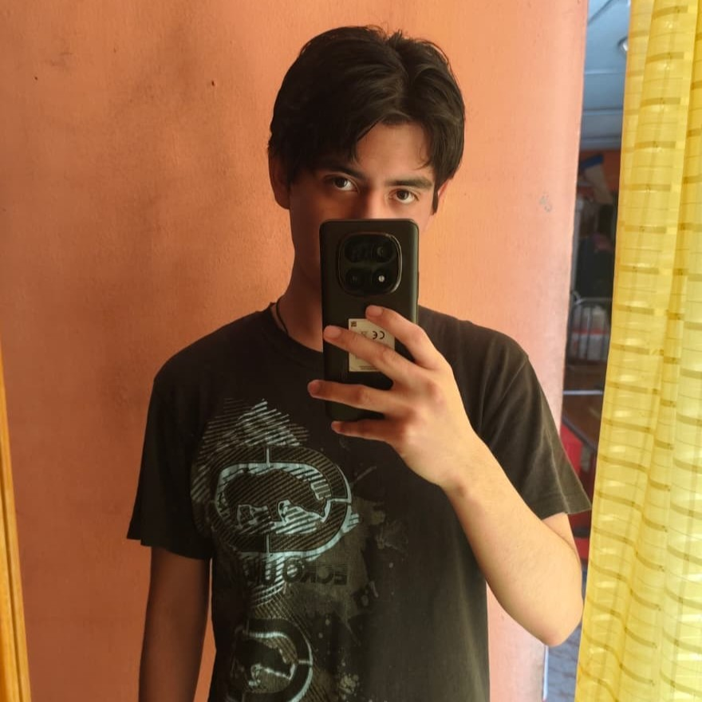
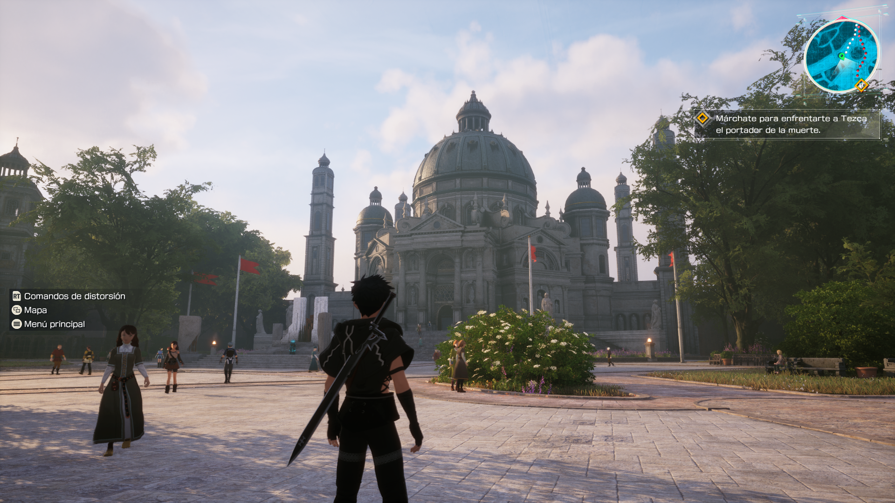
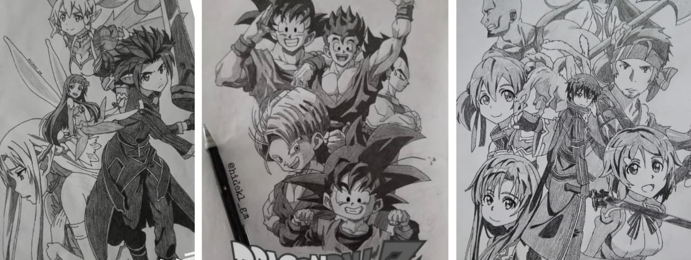
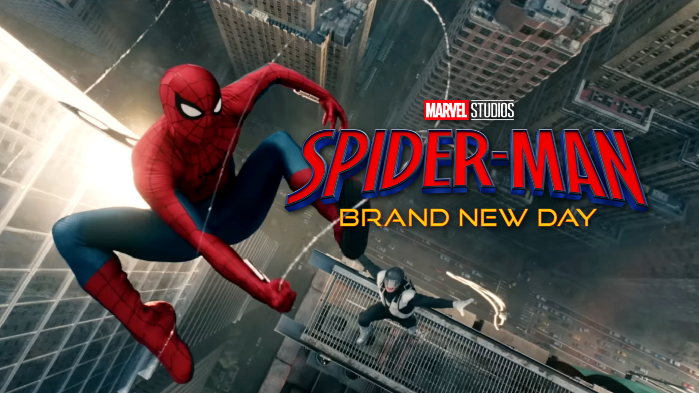
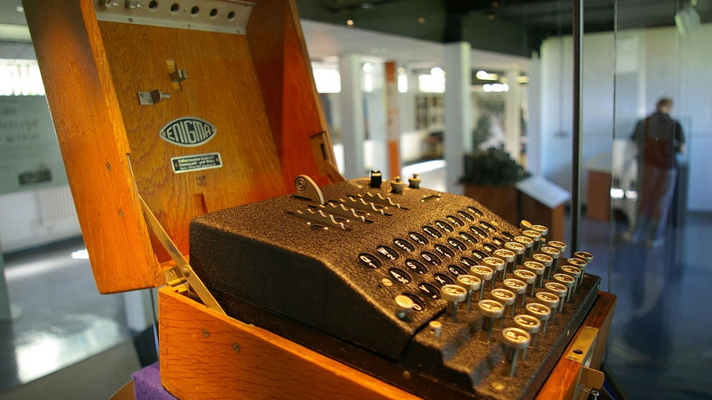
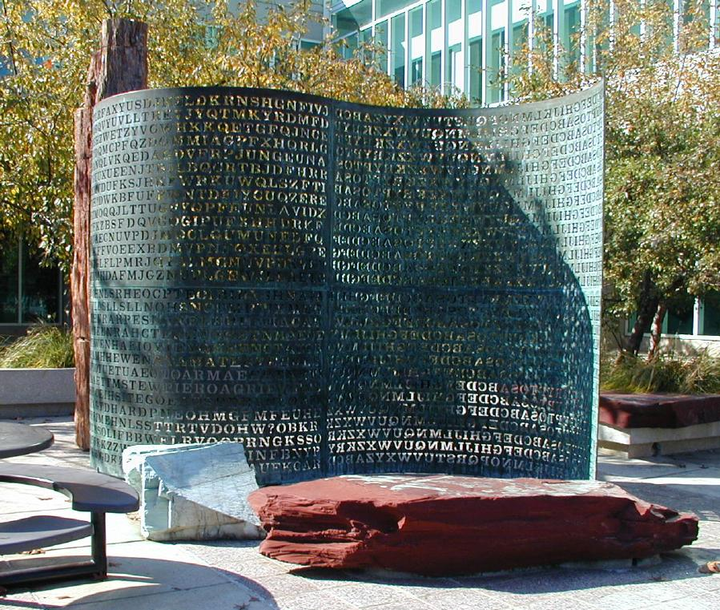

Estudiante de Ing. en Sistemas Computacionales | ESCOM IPN
Estudiante entusiasta por la ingeniería de software, arquitectura de sistemas y seguridad informática. Enfocado en construir soluciones tecnológicas eficientes, estructuradas y seguras.
Actualmente curso la carrera de Ingeniería en Sistemas Computacionales en la Escuela Superior de Cómputo (ESCOM) del IPN. Cuento con experiencia en desarrollo web full stack, desarrollo móvil con Kotlin/Jetpack Compose, bases de datos y administración de entornos de red.
Formación en estructuras de datos, desarrollo full-stack, redes de datos, criptografía y análisis de algoritmos y ensamblado de circuitos electrónicos.
Bases de lógica computacional, modelado y diseño asistido por computadora (CAD/CAM), control numérico, armado de circuitos electrónicos y programación de maquinas tipo CNC.

Exploración de mecánicas de juegos de rol y estrategia, así como el desarrollo de modificaciones personalizadas para Minecraft Java, ya que es un juego bastante sencillo de modificar y divertido de manipular, además de muchos otros videojuegos que me gustan.

Tambien tengo como pasatiempo el dibujo y el arte, lo que me permite expresar mi creatividad y mejorar mis habilidades de diseño. Aprendi a dibujar observando el mundo mediante formas geometricas y lineas unicas para cada detalle, ademas de observar el comportamiento de las sombras y la luz para dar profundidad a mis dibujos, lo que me ha ayudado a disfrutar del proceso creativo.

Apreciación cinematográfica orientada a la ciencia ficción, animación japonesa y formatos inmersivos, analizando estructuras de guión, ademas de apreciar las multiples historias tan interesantes que hay por conocer, entre las franquicias que más me gustan son Star Wars, Marvel, Dragon Ball y muchas otras.
Conceptos y sucesos históricos fascinantes sobre la ciencia del cifrado de la información.

La célebre máquina electro-mecánica nazi poseía más de 150 trillones de combinaciones, pero tenía un fallo de diseño lógico fundamental: ninguna letra podía cifrarse jamás como sí misma. Esta regla redujo masivamente el espacio de búsqueda que Alan Turing y su equipo en Bletchley Park explotaron con la máquina Bombe para descifrar los mensajes.

Ubicada en el cuartel general de la CIA en Langley, esta escultura de cobre creada por Jim Sanborn en 1990 contiene 865 caracteres cifrados divididos en cuatro secciones (K1 a K4). Tras más de 30 años de análisis por expertos y agencias de inteligencia, el pasaje K4 continúa siendo indescifrable.
El intercambio de claves Diffie-Hellman permitió que dos personas compartan un secreto en un canal público sin enviar la clave en sí. Matemáticamente se basa en el problema del logaritmo discreto, pero conceptualmente funciona mezclando colores de pintura comunes y privados imposibles de separar una vez combinados.
¿Tienes alguna duda o te gustaría colaborar en algún proyecto? Puedes escribirme o consultar mis repositorios.